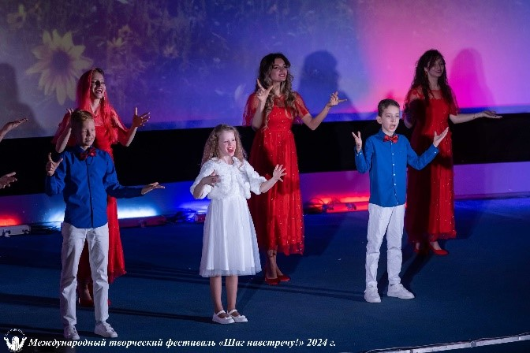
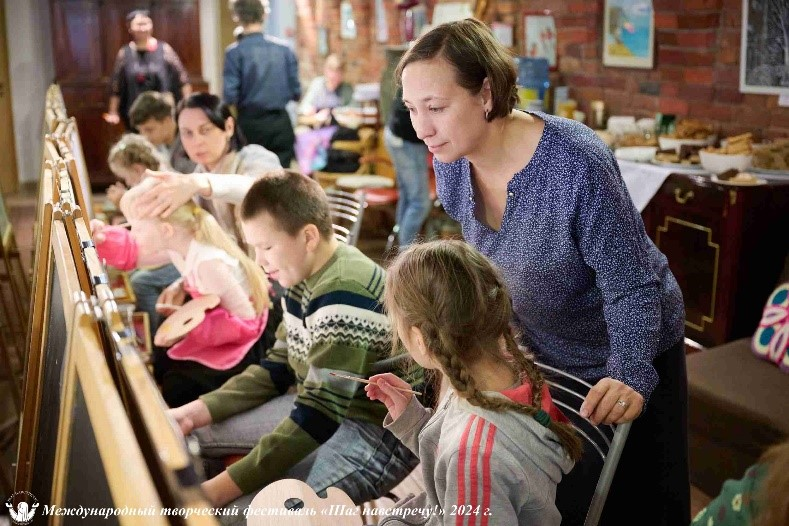

АВТОНОМНАЯ НЕКОММЕРЧЕСКАЯ ОРГАНИЗАЦИЯ СОДЕЙСТВИЯ РАЗВИТИЮ КУЛЬТУРЫ И ИСКУССТВА «МЕЖДУНАРОДНЫЙ ТВОРЧЕСКИЙ ФЕСТИВАЛЬ «ШАГ НАВСТРЕЧУ!»
Проект «Вместе можем всё!» представляет собой комплекс взаимосвязанных программ, каждая из которых направлена на создание творческих условий для молодежи с ограниченными возможностями здоровья, проживающих в интернатах и семьях, воспитанников центров поддержки семейного воспитания. Возраст представителей целевой группы - от 14 до 35 лет.
Программы проекта «Вместе можем всё!»:
Фестиваль «Парус мечты», фестиваль «Шаг навстречу!» и фестиваль «Жить вместе», в рамках которых участники целевой группы получили возможность представить свои творческие достижения на концертных и выставочных площадках города Санкт-Петербурга и получить мастер-классы у профессиональных музыкантов и художников, а их педагоги и родители - обменялись опытом творческого развития особенных детей в ходе конференций.
Программа «Забота и внимание каждому» - дала возможность раскрыть творческие возможности молодежи с инвалидностью в камерной, домашней обстановке в единой программе с гражданами пожилого возраста и волонтерами, а также профессиональными музыкантами и художниками.
Программа «Я могу!» - в рамках которой молодежи с ограниченными возможностями здоровья была предоставлена возможность выступления перед гражданами Санкт-Петербурга на протяжении всего периода проекта. Зрителями и слушателями юных талантов стали пожилые граждане Санкт-Петербурга, проживающие в домах социального назначения, домах -интернатах, Центрах социального обслуживания населения, психоневрологических интернатах.
Программа «Комаровские чтения» поспособствовала приобщению участников целевой группы к творчеству и проживанию в загородной среде. «Творчество как часть бытия» - основная идея программы.
Образовательная программа в онлайн формате «Вместе можем всё» представляет собой онлайн уроки по музыкальному направлению. Представители целевой группы получили знания по сольфеджио и музыкальной литературе, а также развили свои навыки игры на фортепиано в соответствии с программой Детской музыкальной школы.
В команде проекта - лауреаты международных конкурсов, участники многочисленных международных художественных выставок, преподаватели, имеющие более чем 40-летний стаж профессиональной работы в области музыкального и художественного искусства, волонтеры профильных вузов.
 Количество благополучателей: 2825 человек.
Количество волонтеров: 74 человек.